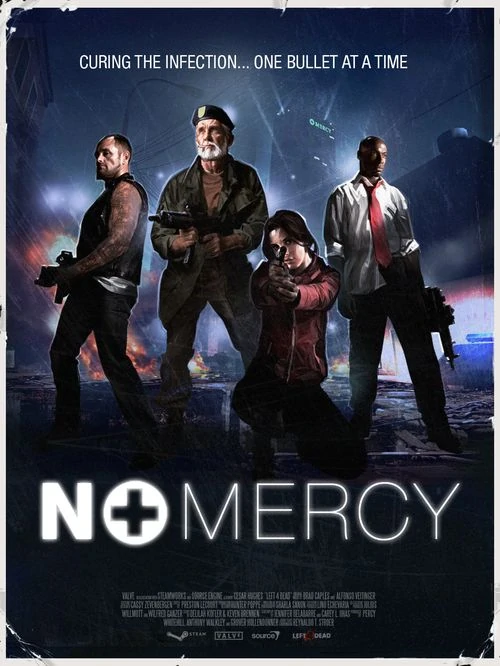
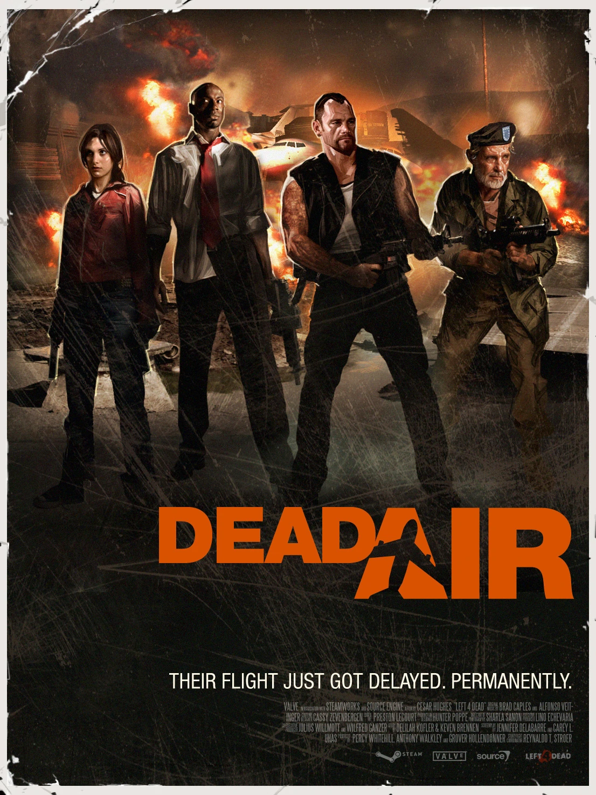
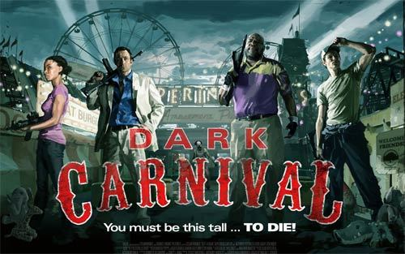

|  |
Campaña No MercyNo Mercy es la primera campaña de Left 4 Dead, esta se extiende por cinco mapas, su siguiente campaña es "Terapia de choque". La campaña también está disponible para Left 4 Dead 2 como remasterización. |
|  |
Campaña Dead AirDead Air es la cuarta campaña de Left 4 Dead. El grupo aparece en el medio de un invernadero en Newburg (otra gran ciudad también afectada), mientras se puede observar un avión que se dirige hacia el aeropuerto de la ciudad. Los supervivientes deben dirigirse hacia el Aeropuerto Metro International. |
|  |
Campaña Dark CarnivalFeria Siniestra (Dark Carnival) es la tercera campaña del juego Left 4 Dead 2, ocurriendo los hechos justo después de la campaña Defunción. |